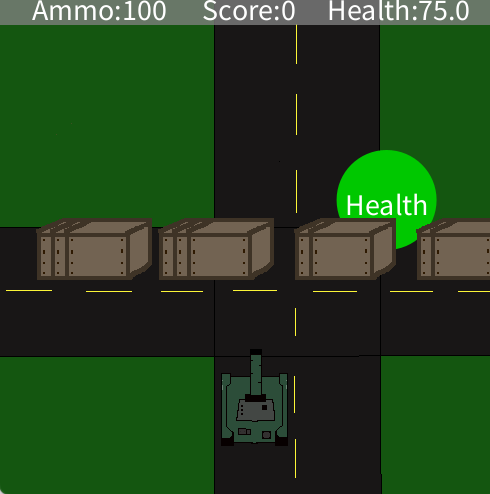
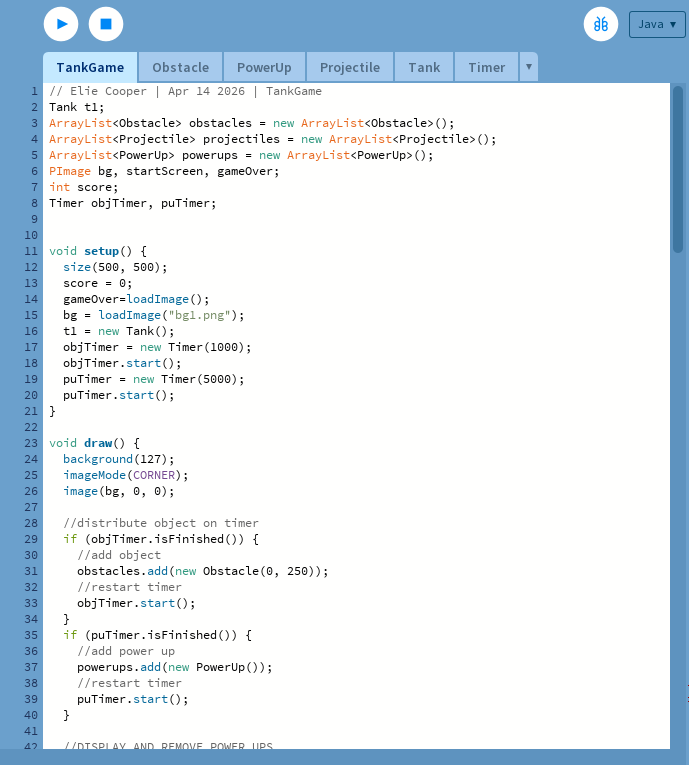

Typing Results

Coding Project
Certifications
Password Coding

My password coding was part of a mini project assignment where we had to choose a game or thing to code by following basic key instructions and tweaking it to how we wanted to show our comprehension of coding. I chose to make a password game where you code a simple password screen and a correct answer to the password that people play and try and guess it. I did an easy password 1234 so that people could easily guess it.
I just had 1 class in this project because it was an easier more straight foreward assignment that used creativity in order to make the assignment my own.Timeline

I also created timeline project where I chose a person to research about in order to create a timeline based off of there life.
ABOUT THE PERSON I CHOOSE- The person I did my timeline/research on is a dancer named Anna Pavlova who was a Ballet dancer born in 1881. Throughout her life she took part in many different performances and companies such as the nutcracker/dying swan(her most famous piece) and the imperial ballet school. She impacted many yound ballet dancers because of her insperation towards other dancers. She died in 1931 after living a very fufillling dance oriented life. ABOUT THE CODE- In order to make the timeline I created a class that contained all of the shapes and physical things in my layout such as the line and the boxes for the information. I then coded specific events into my timeline. Specific codes i used are: Booleans and strings.Timer

In this processing assignmnet I made a opperating timer with a start, stop and restart button. Along with that I customized it by choozing color schemes and more. In it it contains two classes; a timer and a button class which contain all of the code. In the button class I used booleans (boolean int variable and boolean hover). Within this timer asisgnmnet I learned how to code booleans and set true/falses to a better understanding. Along with that I added a imported processing sound application that allowed a sound for when the timer went off which is one of the most intresting things I did with it.


This tank game was probably the most advanced project I did all year throughout my ECS course because it contined many classes, arraylists, and code. *Arraylist- An ArrayList stores a variable number of objects. This is similar to making an array of objects, but with an ArrayList, items can be easily added and removed from the ArrayList and it is resized dynamically. This can be very convenient, but it's slower than making an array of objects when using many elements. Note that for resizable lists of integers, floats, and Strings, you can use the Processing classes IntList, FloatList, and StringList. *Class's- TankGame, Obstacle, PowerUp0, Projectile, Tank, Timer *COMPONENTS- Tuuret, ammo, score, game over/restart, health